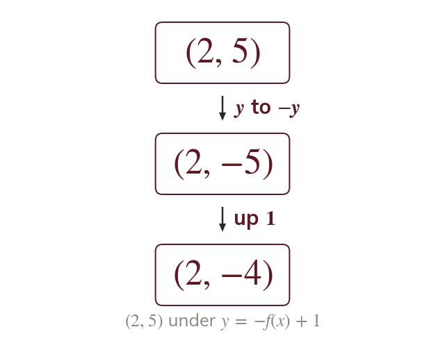
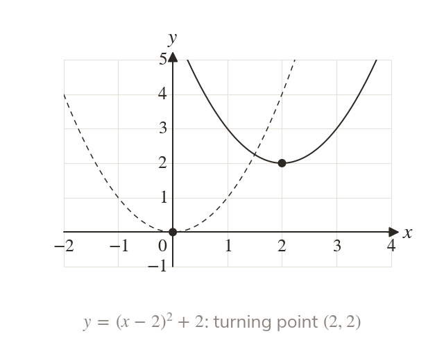
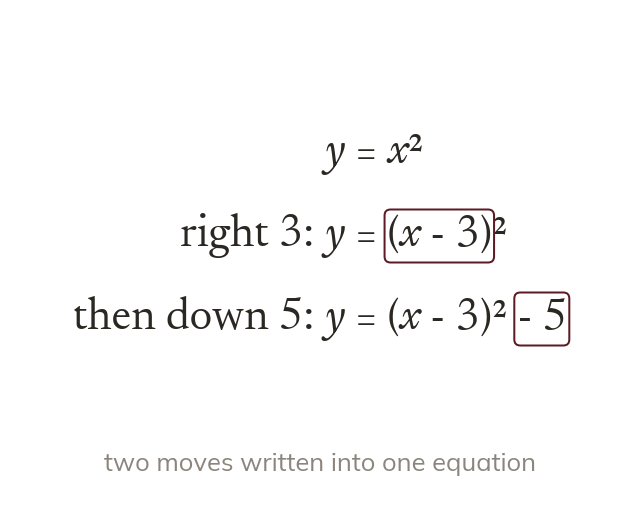

One move, then the next
Two transformations act on every point in turn. A key point, such as a turning point, is followed through each.
Most exam graphs are a basic graph moved more than once, such as
Today we follow a point through two transformations, and read the transformations straight from an equation.
Work down the page at your own pace. Write every answer in your book first, then click to check it.
Read each card, then follow the worked examples one step at a time.
Two transformations act on every point in turn. A key point, such as a turning point, is followed through each.

In the sign change comes first. Then every point moves up
Pick an answer. If it's wrong, the feedback tells you which mistake it was.
Read each card, then follow the worked examples one step at a time.

In moves right up So the turning point is

A sideways move changes the inside of the bracket. A vertical move changes the outside.
Pick an answer. If it's wrong, the feedback tells you which mistake it was.
Log in, then search for a code to practise that skill.
Videos, worksheets and more on each part of this lesson.